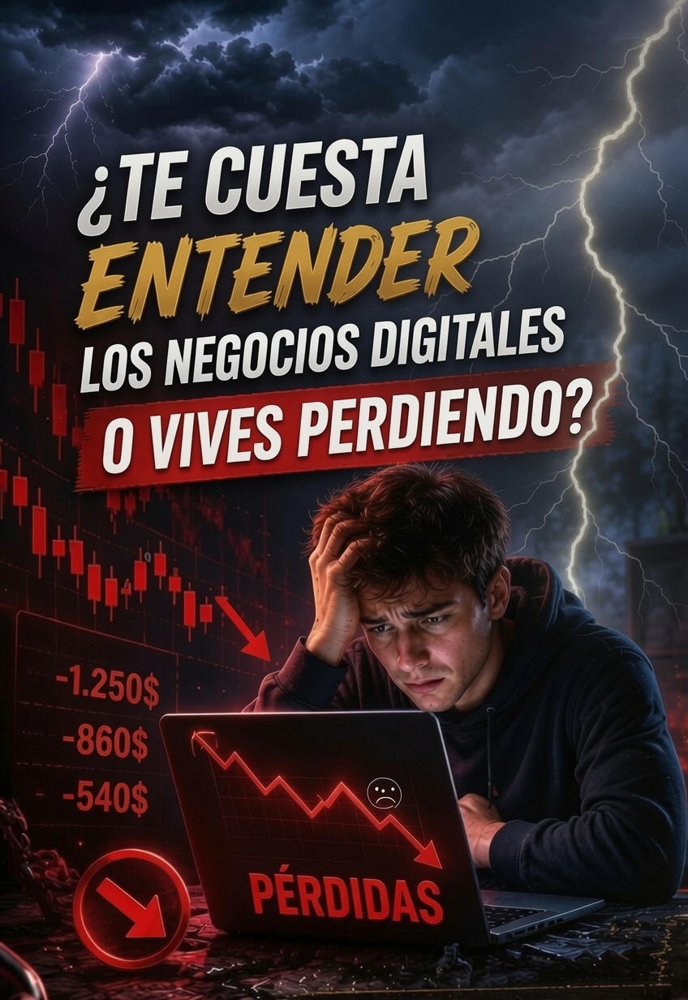
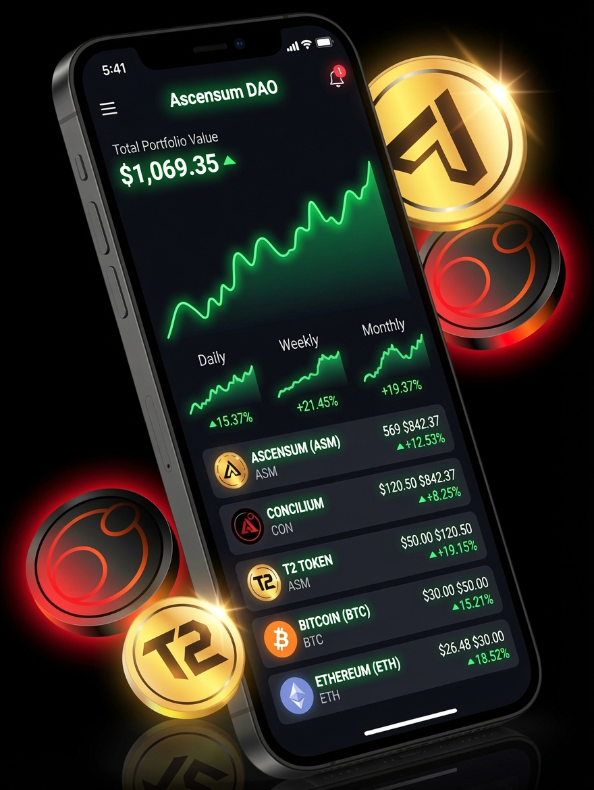
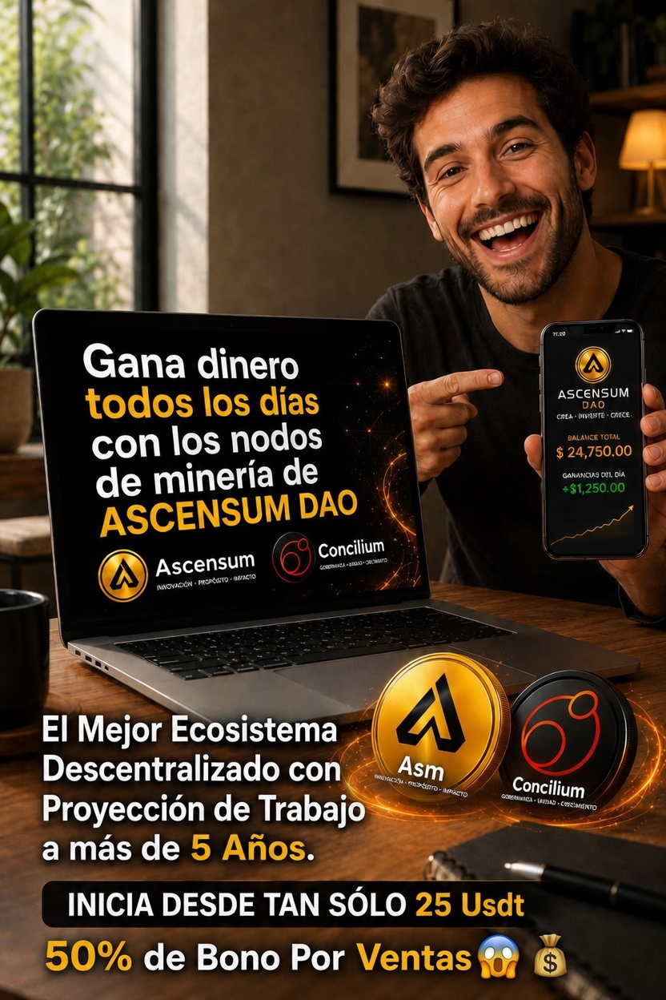
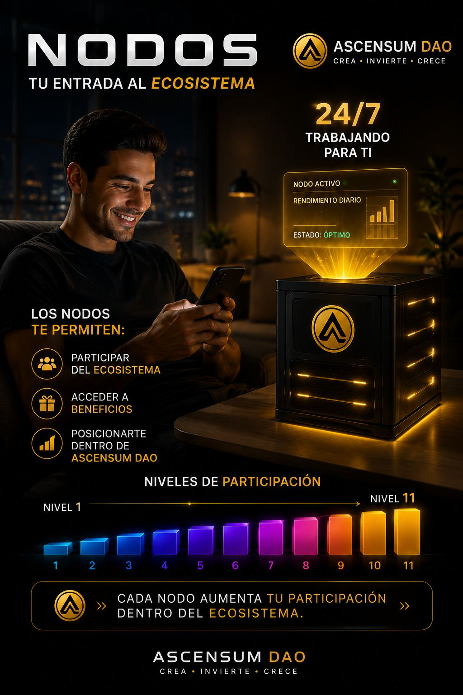
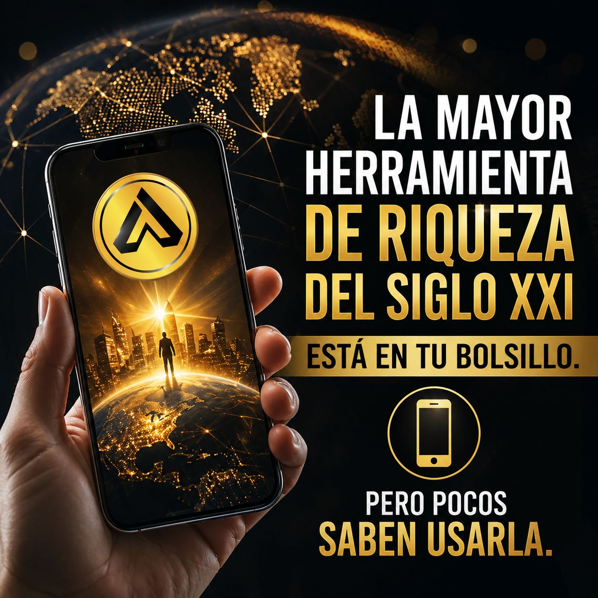
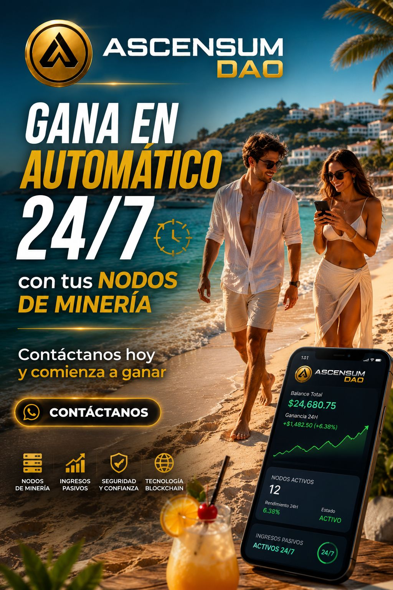
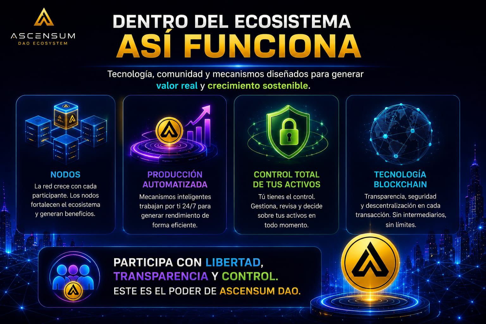
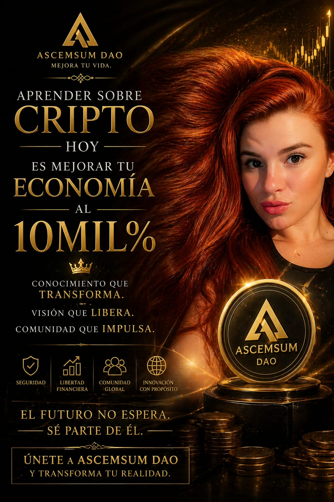
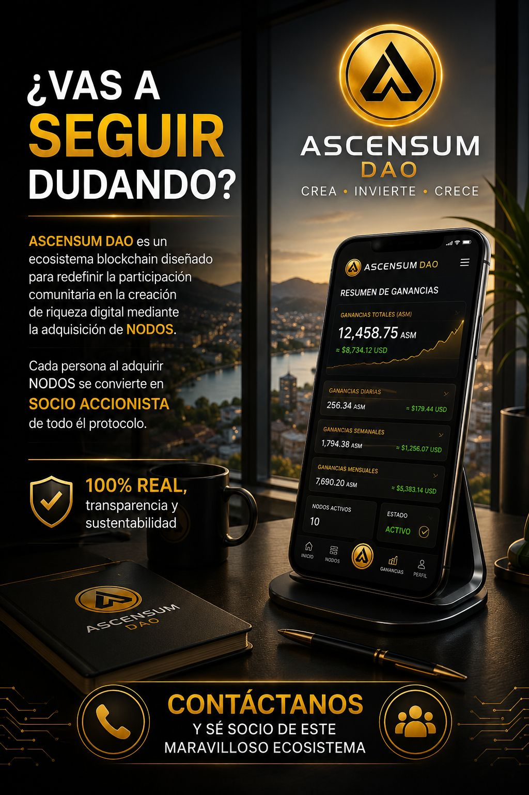

Esta imagen refleja una realidad que muchos viven al ingresar al mundo digital

🔹 El ecosistema digital está lleno de oportunidades extraordinarias para crecer, aprender y generar valor.
Sin embargo, la mayoría de las personas termina perdiendo dinero.
¿Pero porqué?
Esto sucede principalmente por la falta de educación, la búsqueda de resultados rápidos y la ansiedad que generan los mercados y las fluctuaciones de las gráficas.
En Ascensum DAO trabajamos para cambiar esa realidad.
Aquí la educación es la base.
Aprendemos estrategias más seguras y sostenibles, desarrollamos criterio y entendemos cómo funciona realmente el mercado antes de tomar decisiones.
Nuestra comunidad comparte experiencias, errores, aprendizajes y resultados.
Los socios con más trayectoria acompañan a quienes recién comienzan, ayudándoles a comprender mejor este apasionante mundo y a avanzar con mayor confianza.
Herramientas y estrategias como staking, holding y marketing de redes permiten construir una visión de largo plazo, reduciendo la ansiedad que muchas veces provocan las caídas temporales del mercado.
Porque ganar no siempre significa obtener dinero de inmediato.
También significa adquirir conocimientos, contactos, experiencia, mentalidad y oportunidades que pueden transformar tu futuro.
En Ascensum DAO ganas desde el primer día:
✅ Ganas educación financiera.
✅ Ganas una comunidad que te respalda.
✅ Ganas experiencia y visión estratégica.
✅ Ganas conexiones y oportunidades de crecimiento.
✅ Y con el tiempo, desarrollas las herramientas necesarias para prosperar económicamente.
Convierte tu celular en una fuente de nuevas oportunidades.
Inicia tu propio negocio con un producto Hiperdeflacionario.

👉 Gracias a nuestra filosofia cada vez más personas participan desde su celular
🔹 Filosofía Ascensum
En Ascensum no buscamos inversores dependientes.
No creemos en la confianza ciega.
Buscamos personas que aprendan, comprendan y sepan verificar por sí mismas la transparencia de cualquier proyecto.
Creemos que la educación y la transparencia son una de las mejores herramientas para reducir riesgos en el mundo cripto.
Un inversor informado es un inversor más fuerte.

Descubre Ascensum
Un proyecto que está próximo a cumplir 2 años de crecimiento constante.
Una forma sencilla de participar en el mundo cripto, incluso si estás dando tus primeros pasos.
📱 Sin experiencia previa.
🚀 A tu ritmo.
🤝 Con una comunidad dispuesta a ayudarte.
¿Qué es Ascensum?
Ascensum es un ecosistema digital basado en tecnología blockchain donde puedes participar en la creación de un activo llamado ASM.
No necesitas experiencia técnica.
Solo entender lo básico y dar el primer paso.
Funciona a través de nodos.
🔹 Un nodo es tu acceso al sistema
🔹 Es lo que te permite estar dentro y participar

¿Cómo se participa?
Más fácil de lo que parece:
🔹 Todo el proceso se hace desde tu celular
✔ Accedes al sistema
✔ Activas tu nodo
✔ Empiezas a participar
Sin conocimientos técnicos.
Sin procesos complicados

¿Qué obtienes al participar?
Ascensum tiene 3 formas principales de participación:
🔹 Generación de ASM (a través del nodo)
Al activar un nodo, comienzas a recibir ASM diariamente durante 360 días, este token tiene el potencial de multiplicar tu patrimonio x10.
Además, cada nuevo nodo ayuda a reducir la cantidad de ASM en circulación,
lo que crea una dinámica de crecimiento dentro del sistema.
🔹 Opciones para potenciar lo que generas
🔹 Los ASM que recibes no quedan quietos.
Puedes hacerlos trabajar:
✔ Staking con rendimiento periódico
✔ Opciones dentro del ecosistema con mayor potencial
✔ Posibilidad de reinvertir y aplicar interés compuesto para potenciar tus resultados con el tiempo.
🔹 El Tesoro (Ascensum DAO)
Una parte de cada nodo va a un fondo común.
Ese fondo:
✔ Es gestionado por la comunidad
✔ Permite participar en decisiones
✔ Abre acceso a nuevas oportunidades dentro del ecosistema
Cada nodo = más participación
🔹 Importante
Ascensum no es una promesa mágica.
Es una forma de participar en un sistema digital en crecimiento.

Estás a una decisión de cambiar tu posición en el mundo cripto
¿Estás listo para dar el siguiente paso?
Haz click abajo y asegura tu Nodo ahora.
👉 “Si llegaste hasta acá.... no es casualidad"
Es porque realmente querés entender cómo funciona ASM
Este video de unos 4 minutos te da una idea general de lo que es Ascensum
Después te explicamos paso a paso cómo funciona Ascensum detalladamente y qué puedes esperar

Ascensum paso a paso
Ascensum es un sistema basado en blockchain donde puedes participar mediante la compra de nodos que generan el token ASM durante 360 días.
🔹 El sistema está diseñado entre varias opciones, con 3 pilares principales:
✅ 1. Generación de ASM (minado del nodo)
ASM es una moneda que esta limitada solo para aquellas personas que compren nodos o para quienes la compren directamente en Pancakeswap.
Al activar un nodo, comienzas a recibir el token ASM de forma progresiva durante 360 días, puedes retirarlos y monetizarlos o reinvertirlos en el momento que lo desees.
¿Cómo funciona ASM dentro del Ecosistema cada vez que se vende un Nodo?
🔹 ASM tiene características particulares dentro del ecosistema:
Cada vez que se activa un nodo, el valor se distribuye dentro del ecosistema:
🔹 Una parte se utiliza para comprar ASM en el mercado
🔹 Una parte se destina al Tesoro
🔹 Una parte va para comisiones por ventas de Nodos
🔹 Otra parte sostiene el funcionamiento del sistema
🔹 El sistema incluye un mecanismo de reducción de oferta:
Cada vez que se activa un nodo, una parte de esa compra (20%) se utiliza para adquirir ASM en el mercado y retirarlo de circulación mediante el proceso de quema.
Esto genera una dinámica donde la oferta disminuye a medida que el sistema crece, transformando a ASM en una moneda Hiperdeflacionaria.
✔ Hay movimiento constante
✔ La oferta se reduce con el crecimiento
✔ El sistema se retroalimenta con la participación
👉 A medida que el ecosistema crece, la cantidad de ASM disponible se reduce

🔹 La liquidez fue quemada
🔹 El contrato de ASM fue renunciado
Esto significa que los desarrolladores ya no pueden modificar el contrato ni retirar el dinero y hacer caer el valor del token como ha pasado en varios proyectos que hoy ya no existen mas.
🔐 Seguridad y transparencia del contrato
El sistema fue configurado para limitar riesgos comunes en este tipo de proyectos:
La quema de la liquidez y renuncia del contrato es totalmente comprobable ingresando en la blockchain
🔍 Verificación en blockchain
Toda esta información es pública y puede comprobarse directamente en la blockchain a través de BscScan
Al final de esta pagina te enseñamos como aprender a consultar contratos, auditorías, liquidez y transacciones públicas.
Veras como cualquier persona, aun sin conocimientos en el mundo cripto, puede verificar por sí misma la información registrada en la blockchain.
Este conocimiento te permitira tomar decisiones más informadas y evitar muchos de los riesgos habituales del ecosistema cripto.

✅ 2. Opciones para potenciar tus resultados
Los tokens ASM que vas generando dia a dia pueden ponerse a trabajar dentro del mismo ecosistema y el rendimiento mas el capital puedes ir retirandolo de manera diaria:
🔹 Staking
Permite obtener un rendimiento del 136% anual (interes + capital)
🔹 Real Yield Farming
Opción más avanzada que combina ASM con otros activos del ecosistema,
con un rendimiento del 160% anual (interes + capital)
🔹 Ademas puedes retirar o reinvertir los ASM que vas recibiendo diariamente junto con el capital invertido
para potenciar resultados, a esto se lo denomina interés compuesto.
🔹 Y si te interesa promover los nodos de Ascensum, te comento que por cada nodo que vendas el 50% del valor de ese nodo ira directamente a tu billetera en concepto de comision por esa venta.
🔹 Gestión diaria
Los ASM que se reciben pueden:
✔ Retirarse diariamente
✔ Reinvertirse para aumentar la posición
✔ Utilizarse para generar un mayor efecto de crecimiento (interes compuesto)
👉 Esto permite que cada usuario decida cómo escalar su participación dentro del ecosistema

✅ 3. El Tesoro de Ascensum DAO
DAO significa Organizacion Autonoma Descentralizada.
Somos una organizacion que tenemos autonomia descentralizada esto significa que no hay una concentracion de poder en una sola persona.
El tesoro esta protegido por la comunidad en su totalidad, ya que es la que tiene la potestad completa de que es lo que se hara con esos fondos.
Cada vez que se vende un nodo automaticamente una parte del valor de ese nodo (20%) se destina a un fondo común llamado Tesoro que va creciendo con cada venta.
El tesoro es mucho mas que un fondo: es una puerta directa a un sistema de inversion descentralizado, seguro y totalmente transparente, donde cada comprador de un nodo tiene voz y voto gracias a nuestra gobernanza comunitaria.
🔹 ¿Cómo funciona?
✔ Cada nodo representa un voto
✔ Los participantes deciden el destino de los fondos
✔ Se pueden financiar nuevas oportunidades dentro del ecosistema
✔ Accedes a una participación proporcional dentro del Tesoro por compras de nodos ASM
Este es el contrato del Tesoro de Ascensum
0x87Bc4Ae48CDae1127ccF8694F245FF013375cDeb
Da click en el Boton Verificar Fondos del Tesoro y podras comprobar cuantos usdt hay en la cuenta 👇
⭐ Tesoro de Ascensum DAO
ℹ️ Nota: En algunos dispositivos móviles, BscScan puede realizar una verificación de seguridad antes de mostrar la información.
Si observas el mensaje "Verificación de seguridad en curso", no te preocupes es normal, espera unos segundos mientras finaliza el proceso.
Para conocer la cantidad de usdt que hay en el fondo común "Tesoro" debes mirar debajo de Token Holdings
En estos momentos hay 160.775 usdt
Al comprar un nodo de 25 usdt estaras aportando al tesoro de Ascensum 5 usdt, con el nodo de 50 usdt estaras aportando 10 usdt, con el de 100 usdt aportaras 20 usdt al tesoro y asi sucesivamente con cada compra de nodo.
Ese dinero adicional que aportas al tesoro te pertenece, es de por vida y hereditario.
✅ Estos 3 pilares son los que sostienen el funcionamiento y crecimiento del ecosistema Ascensum.

¿Por qué muchas personas están comprando nodos ahora?
El desarrollo de Ascensum está vinculado a la participación de su comunidad.
A medida que más personas se suman y el sistema crece, se activan diferentes mecanismos internos que impactan en su evolución.
Por eso muchas personas están observando esta etapa inicial como un momento clave para entender cómo funciona y participar.
🔹 Todo el proceso es simple
👉 Puedes hacerlo desde tu celular
👉 Sin conocimientos técnicos
👉 Siguiendo un paso a paso
Nuestro principal Producto: Nodos de Mineria
Estos nodos generan el token ASM durante 360 días.
Existen 11 opciones disponibles, comenzando desde solo 25 USDT
▪️ A continuacion tienes la lista completa con los valores de cada Nodo
🔹 ¿Como funciona para vos?
Gracias a cursos gratuitos semanales podrás aprender a manejarte en el mundo cripto.
¿Porque afirmamos que estas comprando tu propio negocio?
🔹 Porque al comprar un nodo el 20% del valor de ese nodo se destina al Tesoro de Ascensum
🔹 Otro 20% se destina a la compra del token ASM en el Dex y se queman aumentando la escasez
🔹 Un 5% va a un sistema automatizado que ayuda a estabilizar el precio de ASM
🔹 Un 5% va para Publicidad, Desarrollo y Marketing
🔹 Por ultimo el 50% restante de la venta de un nodo va a tu propia billetera si es que ademas de invertir en Nodos decides también promocionar y vender Nodos ASM
Como puedes ver el 100x100 del valor total de un nodo se distribuye dentro de la DAO de Ascensum.
En Ascensum no hay un dueño, todos somos Propietarios y nos beneficiamos por igual cada vez que se vende un nodo y se queman tokens.
Lo mas importante es entender que cada nuevo nodo vendido fortalece todo el ecosistema:
✔️ aumenta el Tesoro
✔️ aumenta la escasez del token
✔️ fortalece la estabilidad del precio
✔️ impulsa el crecimiento del proyecto mediante publicidad y desarrollo
✔️ genera oportunidades para todos los participantes de la comunidad
🔹 “El dinero no sale del ecosistema… vuelve constantemente a fortalecer tu propia inversión.”
Mientras mas crece Ascensum, mas fuerte se vuelve el ecosistema y mayor puede ser el beneficio para quienes poseen Nodos Ascensum.
🔹 No estas comprando simplemente un producto… estas participando en la construccion y crecimiento de un negocio descentralizado donde tu tambien eres parte del crecimiento.
Estás a una decisión de cambiar tu posición en el mundo cripto
¿Estás listo para dar el siguiente paso?
Haz click abajo y asegura tu Nodo ahora.

ASM es un token digital al que se puede acceder de dos formas:
ASM es una moneda que esta limitada solo para aquellas personas que compren nodos o para quienes la compren directamente en Pancakeswap.
Tu puedes comprar un Nodo ASM y minar la moneda durante 360 dias
o puedes comprar los ASM directamente en Pancakeswap
Puedes comprobar el valor actual del token ASM en Dexscreener dando click en el siguiente Boton:
👉 Dexscreener.
⭐ Valor actual de ASM ⭐
🔹 ASM es un Token unico en la Blockchain
Cuando todo se devalúa…
aparece un token que hace lo contrario.
0% inflación.
Supply que baja.
Valor que sube.
Ascensum es un negocio digital que:
Genera ingresos reales
Crea activos propios
Permite escalar sin límites geográficos
Transforma ingresos en activos
Y construye patrimonio a largo plazo.
✔ Piensa como dueño y no como empleado del sistema
✔ El patrimonio se construye usando estructuras, no especulando
✨Ascensum Dao, una oportunidad única que combina inversión inteligente y desarrollo profesional dentro del ecosistema Web3.
Sumate a esta comunidad, crecé junto a ella y descubre que cuando trabajamos juntos podemos lograr cosas que parecían imposibles. 💡
Es tu momento para unirte, participar con tus nodos y formar parte de esta revolución financiera.

🔹 No estarás solo en este proceso
Si decides avanzar y adquirir tu Nodo, no solo estarás ingresando a Ascensum…
Estarás entrando a un ecosistema de la mano de alguien que ya recorrió todo el camino:
✅ Operando en la empresa desde su lanzamiento
✅ 9 años en el mundo cripto
✅ Con la cruda experiencia de varios proyectos anteriores
Conozco cada detalle de la operatoria: desde la activación del nodo, la configuración de wallets y maximización de ganancias.
Por eso, aunque hoy no tengas experiencia en criptomonedas, wallets o plataformas digitales, voy a poder guiarte paso a paso desde cero para que entiendas todo con claridad y seguridad.
👉 Tu inexperiencia se apoyará en mi experiencia.
Opcionalmente si decides aprovechar el sistema de comisiones por ventas de Nodos
Desde el primer día recibirás todo el material necesario para comenzar de una forma simple y profesional: imágenes, videos, textos y herramientas listas para utilizar.
Además, estaré acompañándote paso a paso para ayudarte a entender:
🔹 Que es Ascensum y como funciona.
🔹 Que son los nodos y como adquirirlos.
🔹 Cómo crear y utilizar tu billetera digital.
🔹 Cómo realizar las operaciones necesarias de forma sencilla.
🔹 Cómo compartir esta oportunidad de manera clara y profesional.
⭐ También recibirás estos bonos exclusivos para potenciar tu crecimiento:
🎁 Tu propio sitio web listo para utilizar y promocionar tu negocio
🎁 Alojamiento de tus páginas web.
🎁 Configuración de enlaces y sistema de respuestas automáticas.
🎁 Material de promoción profesional: imágenes, videos y textos.
🔹 Y, sobre todo, tendrás mi apoyo y la información necesaria para avanzar con tranquilidad y confianza.
No importa si nunca antes utilizaste criptomonedas ni conoces cómo funciona este mundo.
Lo único que necesitas es tener ganas de aprender y dar el primer paso.
La idea es clara: no pierdas meses probando y equivocándote.
Lo importante es que no tengas que empezar desde cero ni perder tiempo aprendiendo solo.
Empiezas con todo el camino allanado.
📚 Y como si eso fuera poco, Ascensum también te da acceso a capacitaciones y cursos exclusivos para dueños de nodos, para que sigas creciendo mes a mes dentro del ecosistema.
🚀 No se trata solo de comprar un Nodo.
Se trata de entrar acompañado por alguien que ya recorrió el camino.
🔥 Vas a empezar donde a muchos les llevó años llegar.
Es entrar al juego con ventaja.
Es tener soporte real, conocimiento práctico y un sistema probado trabajando para ti.
No necesitas ser experto ni tener experiencia previa.
Solo ganas de aprender y crecer paso a paso.
Tómate unos minutos para recorrer toda la informacion.
Tal vez hoy estés descubriendo una nueva oportunidad que pueda cambiar tu camino.

Estás a una decisión de cambiar tu posición en el mundo cripto
¿Estás listo para dar el siguiente paso?
Haz click abajo y asegura tu Nodo ahora.
🔹 Necesitas mas informacion?
En este video de unos 7 minutos tienes mas informacion sobre lo que es Ascensum Dao
y como se pueden reescribir las reglas del juego para que de verdad todos podamos ganar.


🔍 Verificación en blockchain
Como se mencionó anteriormente, toda la información de Ascensum DAO es pública y puede verificarse directamente en la blockchain.
A continuación encontrarás el contrato oficial de ASM para que puedas comprobar por ti mismo los datos del proyecto.
Al hacer click en el botón, accederás directamente a BscScan, la herramienta más utilizada para consultar y verificar información en la Binance Smart Chain.
ℹ️ Nota: En algunos dispositivos móviles, BscScan puede realizar una verificación de seguridad antes de mostrar la información.
Si observas el mensaje "Verificación de seguridad en curso", no te preocupes es normal, espera unos segundos mientras finaliza el proceso.
Si no estás familiarizado con el proceso de verificacion en BscScan, también encontrarás un video explicativo que muestra paso a paso cómo se debe realizar y qué información debes observar.
Además, dispones de un botón que te llevará a DexScreener, donde podrás consultar información adicional sobre el token, tal como se explica en el video.
Y para facilitar aún más el proceso, hemos incluido un tutorial ilustrado con imágenes que te guiará paso a paso en cada comprobación, ayudándote a verificar toda la información de forma sencilla y sin cometer errores.
📜 Información Oficial Ascensum DAO
Video Tutorial que te indica como comprobar que toda la información es pública
y que puedes analizarla por ti mismo.